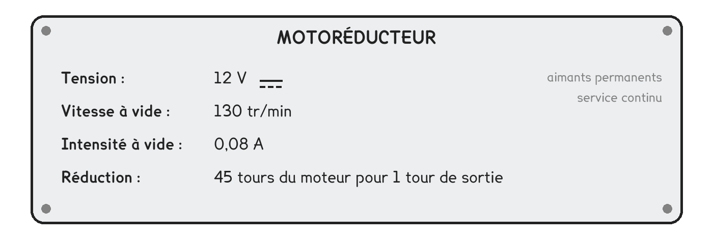
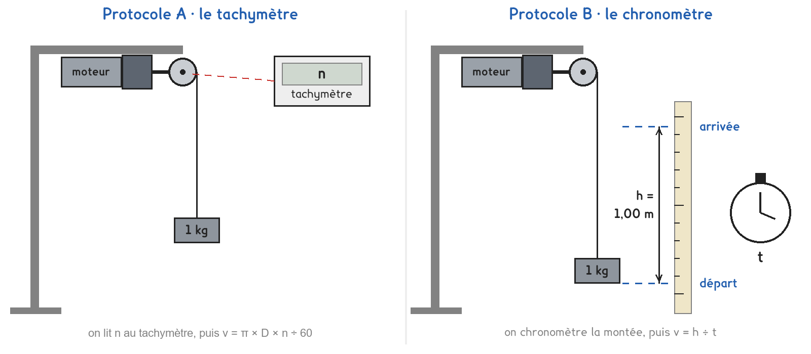
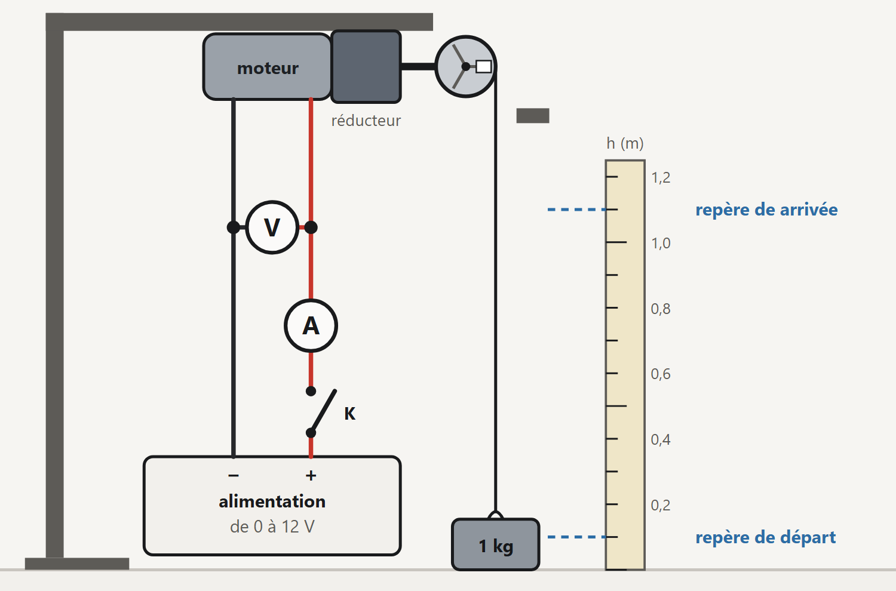
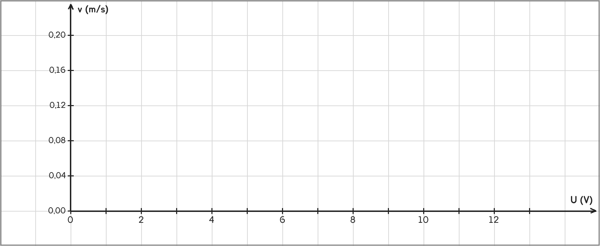

Tle Bac Pro · MMCM, MVTR, MELEC, CIEL · TP sur simulation SIM-06
Quand la tension baisse, le moteur du volet tourne-t-il moins vite, et quelle part de l'énergie reçue sert vraiment à lever le volet ?
4 figures
Sujet. Un volet roulant solaire fonctionne sur une petite batterie de 12 V, rechargée par un panneau. Par temps gris, la batterie faiblit : le volet monte plus lentement.
Problématique : quand la tension baisse, le moteur du volet tourne-t-il moins vite, et quelle part de l’énergie reçue sert vraiment à lever le volet ?
La simulation. Ouvrir « Le moteur : vitesse et rendement » : le fichier moteur.html, sur l’ENT ou la clé du professeur.
Au laboratoire, un petit moteur à réducteur remplace celui du volet : il enroule un fil sur un tambour de 3,0 cm de diamètre et lève une masse de 1 kg. Voici sa plaque.

a) Relever la tension, la vitesse à vide et le type de courant.
Tension : ……………… · vitesse à vide : ……………… · courant : continu · alternatif
b) Moteur à courant continu ou moteur asynchrone ? Justifier par la plaque.
c) Calculer avec P = U × I, v = h ÷ t et P = m × g × v ; g = 9,81 N/kg.
| Une puissance électrique | Une vitesse | Une puissance mécanique |
|---|---|---|
| 12 V et 0,30 A : 3,6 W | 1,00 m en 5,0 s : …… m/s | 1 kg à 0,10 m/s : …… W |
| 6 V et 0,28 A : …… W | 0,50 m en 10 s : …… m/s | 0,5 kg à 0,20 m/s : …… W |
Deux protocoles répondent à la même question. Tous deux lèvent 1 kg sous 6 V, 9 V et 12 V ; ils diffèrent par la façon de mesurer la vitesse de montée.

Protocole A · le tachymètre. Il vise une pastille collée sur le tambour et affiche sa fréquence de rotation n, en tours par minute. À chaque tour, le tambour enroule son périmètre π × D : v = π × D × n ÷ 60.
Protocole B · le chronomètre. Il mesure la durée t de la montée entre deux repères distants de h = 1,00 m : v = h ÷ t.
d) Compléter le tableau pour comparer les deux protocoles.
| Protocole A · tachymètre | Protocole B · chronomètre | |
|---|---|---|
| L’onglet de la simulation | A · Vitesse et tension | B · Lever une charge |
| Ce qu’on lit pour la vitesse | …………………………… | …………………………… |
| La vitesse se calcule par | …………………………… | …………………………… |
| Ce qu’on lit dans les deux | …………………………… | …………………………… |
Le choix se fait maintenant, avant d’ouvrir la simulation.
e) Quel protocole prenez-vous ? Justifier en une phrase.
Je prends le protocole ……… parce que ……………………………………………………………………
f) Avant de mesurer : de 12 V à 6 V, la vitesse de montée est… Entourer.
divisée par moins de 2 · divisée par 2 · divisée par plus de 2

L’écran de la simulation, onglet B : le voltmètre aux bornes du moteur, l’ampèremètre en série.
Sur le schéma : l’alimentation, l’interrupteur K, l’ampèremètre, le moteur et le voltmètre.
g) Schématiser le circuit du moteur ; flécher le sens du courant.
Le schéma se dessine sur la feuille du TP.
Avant de commencer. Ouvrir l’onglet A · Vitesse et tension, régler Charge sur 1 kg.
Avant de commencer. Ouvrir l’onglet B · Lever une charge, régler Masse accrochée sur 1,0 kg.
Pé = U × I, puissance reçue · Pm = m × g × v, puissance rendue · rendement η = Pm ÷ Pé.
h) Relever vos mesures, puis calculer pour m = 1 kg et g = 9,81 N/kg.
| U (V) | I (A) | n (tr/min) ou t (s) | v (m/s) | Pé (W) | Pm (W) | η (%) |
|---|---|---|---|---|---|---|
| 6 | ||||||
| 9 | ||||||
| 12 |
On trace la vitesse de montée en fonction de la tension.
i) Placer les trois points v en fonction de U, puis tracer la droite qui les relie.

j) Votre prévision f est-elle confirmée ? La droite passe-t-elle par l’origine ?
Comparer avec un groupe de l’autre protocole, à 12 V : la vitesse et le rendement.
k) Les deux protocoles trouvent-ils le même rendement ? Pourquoi ?
l) Où passe l’énergie que le moteur ne rend pas ? Citer deux pertes.
m) Citer une chose qu’un vrai moteur montrerait, et pas la simulation.
n) Répondre à la problématique en deux phrases.
Ce que ce TP a établi, pour tout moteur électrique :
À RETENIR
Un moteur électrique convertit de l’énergie électrique en énergie mécanique. Il reçoit Pé = U × I ; quand il lève une charge, il rend Pm = m × g × v. Son rendement η = Pm ÷ Pé est inférieur à 1 : le reste part en chaleur, par effet Joule dans le bobinage et par les frottements.
Pour un moteur à courant continu, la fréquence de rotation augmente avec la tension. Sous une tension trop faible, il ne démarre pas.
Dans l’onglet B, à 12 V, lever 0,2 kg puis 2,0 kg. Le rendement est-il le même qu’avec 1 kg ? Pourquoi choisit-on un moteur adapté à la charge qu’il doit lever ?
TP sur simulation de physique-chimie. Le travail se fait sur la feuille du TP : cette page en est la version à l'écran, sans les lignes à remplir. Rien n'est enregistré.